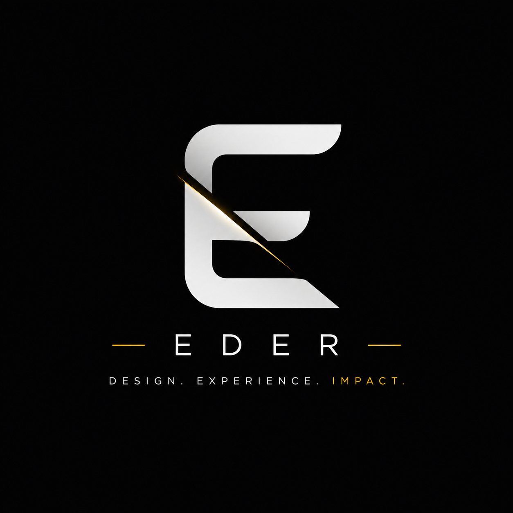

1. Scope and changes
Only items listed in the approved proposal or statement of work are included. Additional pages, features, integrations, revisions or changed requirements may require a new quote, timeline and payment.

EDERITOLegal center
These policies govern ederito.com and general engagements with Ederito, a digital solutions company operating under Zanara Labs LLC. A signed proposal, statement of work or project agreement may add to or replace these terms for a specific project.
Terms of service
Only items listed in the approved proposal or statement of work are included. Additional pages, features, integrations, revisions or changed requirements may require a new quote, timeline and payment.
Work begins after required onboarding information and the stated deposit are received. Unless a signed agreement says otherwise, deposits and completed milestones are non-refundable. Ederito may pause work or withhold deliverables for overdue balances, subject to applicable law.
The client must provide accurate content, approvals, credentials and feedback on time. Delays caused by missing client materials extend deadlines. Projects inactive for 30 days may be paused or closed and may require a reactivation fee.
The client owns materials it lawfully supplies. Ederito retains ownership of pre-existing tools, reusable code, templates, methods and know-how. Rights to custom final deliverables transfer only after full payment, excluding third-party materials and Ederito background technology.
Domains, hosting, app stores, payment processors, plugins, APIs, email, AI providers and other third parties have their own terms and fees. Ederito is not responsible for their outages, policy changes, rejections, data loss or account actions.
Ederito does not guarantee sales, traffic, rankings, funding, approvals, app-store acceptance, uninterrupted operation or any specific business result. Estimates and launch dates are good-faith targets unless expressly guaranteed in a signed agreement.
Maintenance policy
When expressly included in signed project documents, the six-month period begins at production launch or client acceptance, whichever occurs first. It covers reasonable bug fixes attributable to the delivered build, routine security or dependency updates when practical, basic monitoring, recovery from available Ederito-managed backups and limited small content edits within the original scope.
It does not include new features, redesigns, new pages, migrations, third-party failures, app-store work, emergency after-hours work, malware caused by client or third-party access, content creation, SEO campaigns, hosting or vendor fees, or systems modified by others. Unused support does not roll over or convert to cash.
Refund policy
Unless a signed agreement says otherwise, deposits, completed milestones, consultations, audits, design work, setup work, domains, licenses and third-party purchases are non-refundable. If Ederito cancels without client breach, prepaid amounts clearly attributable to unperformed work will be refunded after completed work and nonrecoverable costs are deducted.
Privacy policy
We may collect contact details, company information, project requirements, account records, communications, uploaded files, contract signatures, invoices, payment status, support history, device information and technical logs. Card details are generally processed by payment providers rather than stored by Ederito.
We use information to respond to requests, provide and secure services, manage projects, contracts, payments and support, prevent abuse and comply with law. Records may be retained as reasonably needed for contracts, accounting, security, disputes and legal compliance. We do not sell personal information for money.
Governing law
These terms are governed by Florida law. Before filing a claim, the parties will attempt good-faith written resolution for 30 days. Unless a signed agreement states otherwise, exclusive venue lies in the state or federal courts in the Florida county of Zanara Labs LLC’s principal office. Mandatory consumer rights remain unaffected.